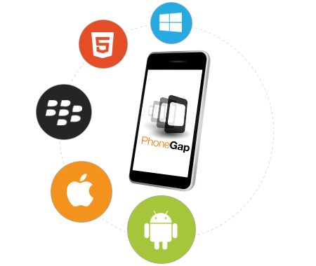
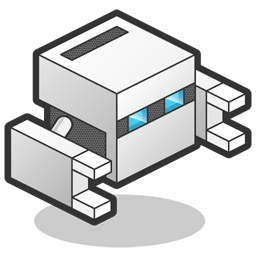

Historia

Las aplicaciones híbridas llevan una gran ventaja
sobre las nativas, y esto se debe a que pueden ser
usadas en cualquier dispositivo inteligente,
aunque estos posean diferentes sistemas
operativos, lo cual es la principal desventaja de las
aplicaciones nativas.
Polo Jaramillo - 2017
¿Qué es PhoneGap?

Es un Framework para el desarrollo de
aplicaciones principalmente para dispositivos móviles
producido por la compañía Nitobi Software y
posteriormente adquirido por Adobe Systems.
¡ Las aplicaciones desarrolladas con PhoneGap son
aplicaciones hibridas, esto significa que no son
completamente nativas, ni completamente basadas
en web.
Polo Jaramillo - 2017